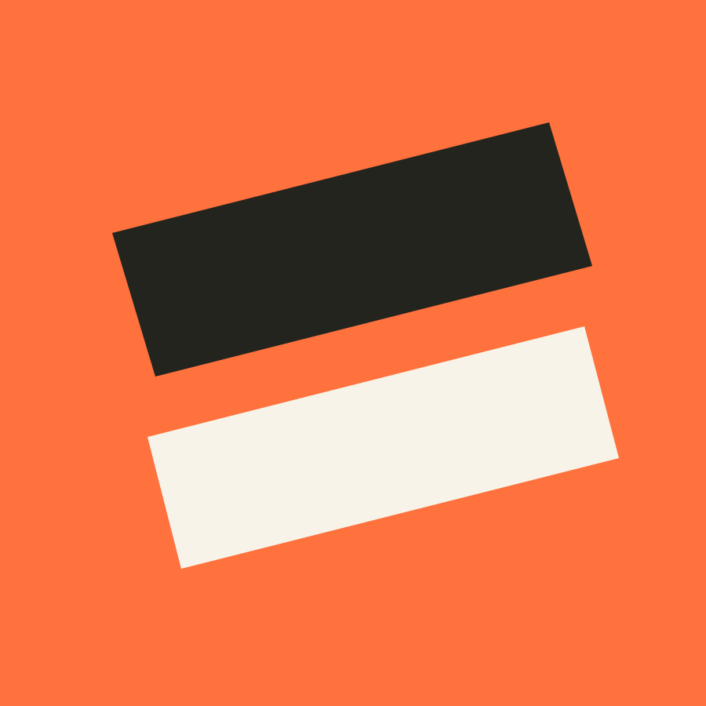
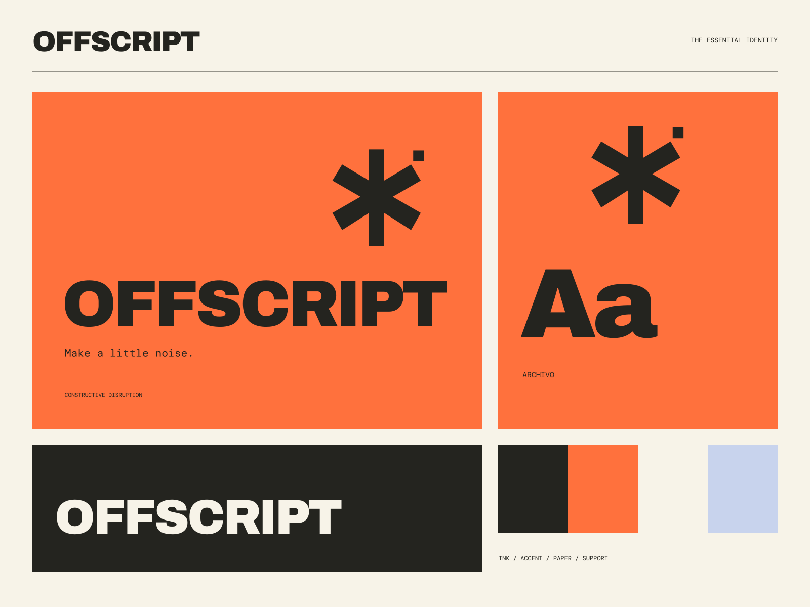

01
A sharper idea
Start with a position worth taking, then make it unmistakable.
INDEPENDENT STUDIO / ZERO DEFAULTS
Make a little noise. Direction / Design / Disorder

A coherent little world
Direction / Design / Disorder Make a little noise.
01
Start with a position worth taking, then make it unmistakable.
02
Graphic systems with enough conviction to carry the message.
03
Useful, working design that does more than sit politely.

The point of view
Offset print, torn geometric registrations, oversized compressed headlines, and high-visibility orange. The chaos is deliberate; the information is exact.